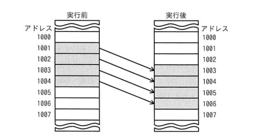

同一メモリ空間で，転送元の開始アドレス，転送先の開始アドレス，方向フラグ及び転送語数をパラメータとして指定することによって，データをブロック転送できる機能をもつ CPU がある。図のようにアドレス 1001 から 1004 のデータをアドレス 1003 から 1006 に転送するとき，指定するパラメータとして適切なものはどれか。ここで，転送は開始アドレスから 1 語ずつ行われ，方向フラグに 0 を指定するとアドレスの昇順に，1 を指定するとアドレスの降順に転送を行うものとする。
| 転送元の開始アドレス | 転送先の開始アドレス | 方向フラグ | 転送語数 | |
|---|---|---|---|---|
| ア | 1001 | 1003 | 0 | 4 |
| イ | 1001 | 1003 | 1 | 4 |
| ウ | 1004 | 1006 | 0 | 4 |
| エ | 1004 | 1006 | 1 | 4 |

エ：転送元の開始アドレス1004，転送先の開始アドレス1006，方向フラグ1，転送語数4
| 選択肢 | 内容 | 補足 |
|---|---|---|
| ア | 1001／1003／方向0（昇順）／4語 | 昇順（1001→1002→1003→1004の順）で転送すると、1003番地への書き込みが先に行われてしまい、その後本来1003番地から読むはずだったデータが上書き後の値になってしまう（上書き事故）。bash_toolによるin-placeシミュレーションでも1005,1006番地の結果が誤りになることを確認 |
| イ | 1001／1003／方向1（降順）／4語 | 開始アドレスが1001のままで降順に転送すると、転送元アドレスが1001→1000→999→998と範囲外に進んでしまい、意図したアドレス1001〜1004のデータを正しく転送できない |
| ウ | 1004／1006／方向0（昇順）／4語 | 転送先の開始アドレスは正しいが、昇順で進めると転送元アドレスが1004→1005→1006→1007と本来の範囲を超えて進んでしまい、正しいデータを転送できない |
| エ | 1004／1006／方向1（降順）／4語 | 正解。転送元の末尾（1004）と転送先の末尾（1006）から開始し、降順（1004→1003→1002→1001）に1語ずつ転送することで、未読みのデータを上書きする前に読み出すことができ、bash_toolでのin-placeシミュレーションでも正しい最終結果（1003←a, 1004←b, 1005←c, 1006←d）が得られることを確認 |
出典：2024年度 春期 応用情報技術者試験 午前 問8（IPA）